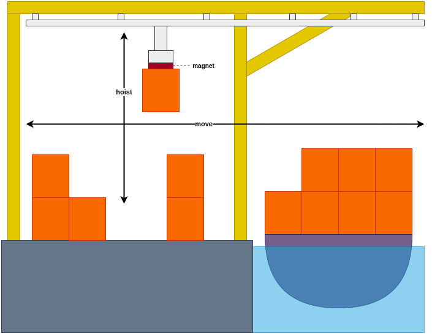
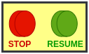
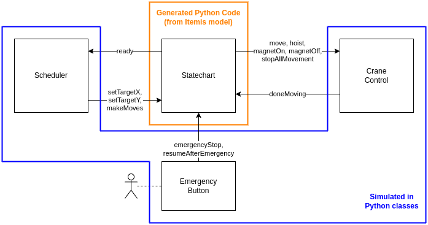

The goal of this assignment is to familiarize yourself with Statechart modeling, simulation, testing and code generation. We will use itemis CREATE (formerly called "YAKINDU Statechart Tools").
Clone the StartingPoint git repository into your itemis CREATE workspace, and import it as a project (without copying the files).
Introduction to Assignment
We will use the Statecharts formalism to model a software controller for a crane that picks up and drops off containers.
The crane can move horizontally ("move") and vertically ("hoist"), and it has an electromagnet that can be turned on/off to pickup/drop-off containers.

Artistic impression of crane
Architecture
We assume that several components already exist. These components are:
Scheduler: Determines in what order and where to pickup/drop-off containers
Crane Control: Controls the motors of the crane. Given a position, the crane control can make the crane move to that position.
Emergency Panel: A panel with two buttons: STOP and RESUME. In case of emergency, the STOP button will temporarily stop all crane movement.

Emergency Panel
The Statechart model sits in between these components, and communicates with them only via (asynchronous) events.

System Architecture. The blue and orange parts indicate deployment (explained later).
Interfaces
For interaction with each of the assumed components, a fixed interface is provided. This interface is already implemented in the starting point Statechart file.
Scheduler
In/Out
Event
Parameter
Meaning
out
ready
-
Indicates that the Statechart is ready to make its next move.
in
setTargetX
real
Instructs the Statechart with the horizontal target position (= parameter) of the next move.
in
setTargetY
real
Instructs the Statechart with the vertical target position (= parameter) of the next move.
in
makeMove
-
Instructs the Statechart to make the next move. This event will only be raised after raising setTargetX and setTargetY.
Crane Control
In/Out
Event
Parameter
Meaning
out
move
real
Make the crane move horizontally to given (via parameter) position.
out
hoist
real
Make the crane move vertically to given (via parameter) altitude.
out
stopAllMovement
-
If the crane is currently moving, make it stop its movement until standstill.
in
doneMoving
-
Indicates to the Statechart that the requested movement (move, hoist) or stopping (stopAllMovement) is complete.
Note: This event will only be sent to the Statechart for the most recent request: for instance, if move immediately followed by stopAllMovement (before having received doneMoving for the move), then doneMoving will only be received once, to indicate that stopAllMovement is complete.
Note: If the crane was not moving and stopAllMovement was requested, this request will still be acknowledged with the doneMoving event.
out
magnetOn
-
Turns on the magnet (to pick up a container)
out
magnetOff
-
Turns off the magnet (to drop a container)
Emergency Button
In/Out
Event
Parameter
Meaning
in
stop
-
Indicates to the Statechart that the emergency STOP-button is pressed.
in
resume
-
Indicates to the Statechart that the emergency RESUME-button is pressed.
Definitions
Safe altitude: If the crane is at a safe altitude, this means that it can move horizontally without bumping in to stacked containers, even while carrying a container. This altitude is defined as a constant in the Statechart.
Behavioral Requirements
Initially, you may assume the magnet is off, the crane is at a safe altitude, and not moving in any direction.
Immediately at startup, the Statechart will raise the output event ready to indicate that it can make its first set of moves.
After raising ready, the Statechart remains idle, waiting for the Scheduler to instruct it with the next move.
The next move is instructed by the Scheduler by raising 3 input events at the same time, in the following order: first setTargetX and setTargetY, whose parameters indicate the X,Y position to move to, which the Statechart should remember for later (in an internal variable), followed by the input event makeMove, indicating that the Statechart can start making its move.
A move always consists of the following sequence:
Start moving horizontally to the horizontal target position.
When this horizontal movement is complete, the Statechart should wait 500 ms before proceeding.
Then, start moving vertically downwards to the vertical target position.
When the vertical movement has complete, again, the Statechart should wait 500 ms before proceeding.
The magnet is toggled (meaning: if the magnet was off, it is turned on, or if it was on, it is turned off).
We wait another 500 ms.
The crane starts moving vertically upwards, to the safe altitude.
After the vertical movement has completed, we wait yet another 500 ms.
The Statechart raises the ready output event to indicate that it is ready for the next move.
While making a move, the Statechart must ignore the following incoming events: setTargetX, setTargetY, makeMove.
An emergency stop can always be made (whether the crane is idle or not). During an emergency stop, the crane stops responding to all input events, except those of the emergency buttons.
An emergency stop consists of the following sequence:
The emergency STOP-button is pressed.
In response, the Statechart immediately requests the Crane Controller to stop all movement.
After the crane has come to a standstill, the Statechart can respond to an emergency RESUME-button press.
If the RESUME-button is pressed, the Statechart waits 2 seconds before resuming normal behavior...
If in this 2-second period, the STOP-button is pressed again, the resuming is canceled, and Statechart stays in emergency mode until the RESUME-button is pressed again, starting the 2-second period again.
When the 2-second period is over, the activity that was happening when the emergency stop started, is resumed. For instance, if the crane was moving horizontally to pick up a container, it resumes this movement as if nothing happened, followed by the rest of the move (go down, toggle magnet, go up).
Testing your solution
Overview of different testing approaches
itemis debugger
Python GUI
Python test runner
white box (e.g., can see what are the current states?)
yes
no
no
interactive or automated?
interactive (real-time)
interactive (real-time)
automated (as-fast-as-possible)
returns
nothing
execution trace
pass or fail (+diff)
What is expected
The assignment has been designed specifically to encourage use of as many Statechart features as possible:
composite states
orthogonal states
timed transitions
guard conditions
transition actions
enter/exit actions
internal variables
internal events
history
Make sure you understand these features, and use them, where you think they are appropriate.
To give you an indication of the complexity, my own solution consists of 21 states (not counting "regions") and 19 transitions.
Always ensure that your transitions have an event trigger or after-trigger. This gives you have much more control over when your transition will fire, resulting in a solution that is more likely correct and understandable.
Never use:
after 0 s (can give strange behavior)
after 1 ms (unless of course you really want to wait 1ms)